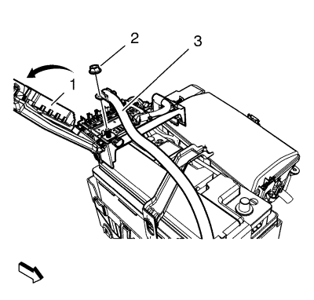
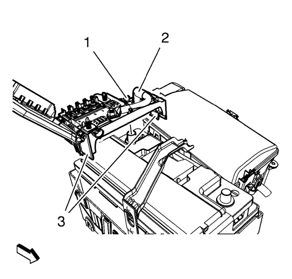
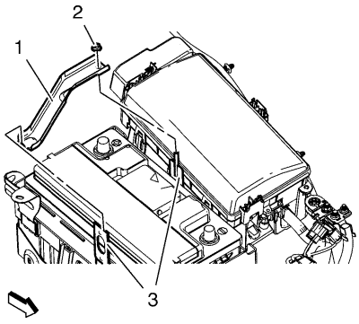
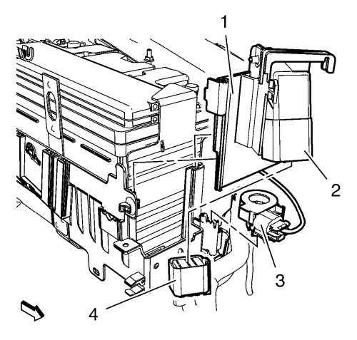
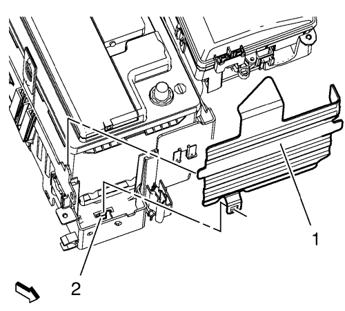

Sustitución de la batería 1.6L LDE, LLU, LXT, LXV y 1.8L 2H0
Herramientas especiales
GE-49379 Herramienta de desmontaje de la batería
Si desea informarse sobre herramientas regionales equivalentes, consultar Herramientas especiales
Procedimiento de desmontaje
- Desconecte el cable negativo de la batería. Consultar Desconexión y conexión del cable negativo de la batería .

- Afloje las lengüetas de sujeción de la tapa de la caja de fusibles de la batería y abra la tapa (1).
- Desmonte la tuerca del cable positivo de la batería que va al motor de arranque (2).
- Desmonte el cable positivo de la batería que va al motor de arranque (3) de la batería.

- Afloje la tuerca del cable positivo de la batería (1) en la batería.
- Desmonte el cable positivo de la batería (2).
- Abra las 2 lengüetas de sujeción (3) y desmonte la cubierta del cable positivo de la batería.

- Desmonte la tuerca de la sujeción de la batería (2).
- Desmonte la sujeción de la batería (1) de la bandeja de la batería (3).

- Desenganche el sensor de corriente de la batería (3) de la bandeja de la batería.
- Desconecte el enchufe del mazo de cables del controlador de las bujías de incandescencia (4).
- Desmonte el soporte del controlador de las bujías de incandescencia (2) de la bandeja de la batería.

- Abra la lengüeta de sujeción (2) y desmonte la bandeja protectora de la batería (1).
- Desmonte la batería con la herramienta de desmontaje GE-49379.
Procedimiento de montaje
- Monte la batería con la herramienta de desmontaje GE-49379.
- Monte la bandeja protectora de la batería (1).
- Monte el soporte del controlador de las bujías de incandescencia (2) en la bandeja de la batería.
- Conecte el enchufe del mazo de cables del controlador de las bujías de incandescencia (4).
- Enganche el sensor de corriente de la batería (3) en la bandeja de la batería.
- Monte la sujeción de la batería (1) en la bandeja de la batería (3).
Precaución:Consulte Precaución con las fijaciones en la sección Prólogo.
- Monte la tuerca de la sujeción de la batería (2) y apriétela a 9 N·m (80 lib. pulg.).
- Monte la cubierta del cable positivo de la batería y fije las 2 lengüetas de sujeción (3)
- Monte el cable positivo de la batería (2).
- Apriete la tuerca del cable positivo de la batería (1) en la batería a 9 N·m (80 lib. pulg.).
- Monte el cable positivo de la batería que va al motor de arranque (3).
- Monte la tuerca del cable positivo de la batería que va al motor de arranque (2) y apriétela a 9 N·m (80 lib. pulg.).
- Cierre la tapa de la caja de fusibles de la batería (1) y fije las lengüetas de sujeción en la caja de fusibles de la batería.
- Conecte el cable negativo de la batería. Consultar Desconexión y conexión del cable negativo de la batería .
| © Copyright Chevrolet. Reservados todos los derechos |